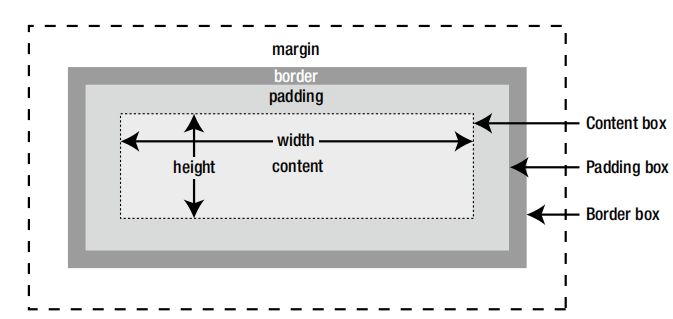

The CSS box model consists of the following components:
Content - This is the content of an HTML element such as paragraphs, image, <div>, or <span>. Padding - Horizontal and Vertical space surrounding the content. Border - A border drawn around the padding. Margin - Horizontal and Vertical space outside the border.
The Width and Height properties set the horizontal and vertical dimention of an element. The default value of both properties is auto, which means that the element expands or contracts to fit the natural size of the content. Another four properties allows you to constran the dimensions of an element within a specified range
| Properties | Initial Value | Inherited | Description |
|---|---|---|---|
width |
auto | No | Sets the width for an element. Caan be applied to any element, except inline text, or table rows. If no value is specified, the element expands horizontally as far as possible to accodmodate the elements content. |
min-width* |
0 | No | Sets a minimum width for an element |
max-width* |
0 | No | Sets a maximum width for an element |
height |
auto | No | Sets the height for an element. Can be applied to any element, except inline, text or table columns. If no value specified, the element expands vertically as far as possible to accomodate the elements content |
min-height* |
0 | No | Sets a minimum height for an element |
max-height* |
none | No | Sets a maximum height for an element |
All six properties accepts values expresses as a length (for example pixels or ems) or as percentage. When a percentage is used, the width or height is calculated as a percentage of the parent elements width or height
Both padding and margins add vertical and horizontal space around elements. Sometimes, it doesnt matter which you use because they appear to have same effect.
| Feature | Padding | Margins |
|---|---|---|
| Background | The content ackground streches into padding | The background of the contents parent element shows through margins |
| Border | Padding goes inside the border | Margins go outside the border |
| Collapsing | Padding never collapse | Adjacent vertical margins collapse |
Sa ilalim ng puting ilaw sa dilaw na buwan Ang iyong ganday umaabot sa buwan and tikbok ng pusoy dinig sa ka lawakan at bumabalik dito sa akin ikaw ang mahal ikaw lang ang mamahalin pakinggan ang puso at damdamin damdamin aking damdamin sa ilalim ng puting ilaw sa dilaw na buwan pakniggan mo ang aking sigaw sa dilaw na buwan
Sa ilalim ng puting ilaw sa dilaw na buwan Ang iyong ganday umaabot sa buwan and tikbok ng pusoy dinig sa ka lawakan at bumabalik dito sa akin ikaw ang mahal ikaw lang ang mamahalin pakinggan ang puso at damdamin damdamin aking damdamin sa ilalim ng puting ilaw sa dilaw na buwan pakniggan mo ang aking sigaw sa dilaw na buwan
Padding adds breathing space around the content inside an element. The styles in comparison look like this:
body{
background-color: rgb(48, 48, 48);
color: #ffffff;
}
#padded, #not padded{
width: 150px;
border: 10px solid #999;
margin: 20px;
}
#padding {
padding 20px;
}
Padding can be added to almost any element, However, the only table elements that can have padding are the table itself and individual table cells.
| CSS Padding Properties | |||
|---|---|---|---|
| Property | Initial Value | Inherited | Description |
padding-top |
0 | No | Adds padding to the top of an element |
padding-right |
0 | No | Adds padding to the right of an element |
padding-bottom |
0 | No | Adds padding to the bottom of an element |
padding-left |
0 | No | Adds padding to the left of an element |
padding |
0 | No | Shorthand property. Accepts between one and four values. |
All properties listed in above accepts lenght, such as px or em, or a percentage. Negative values are not allowed. Although padding is never inherited, you can use the keyword inherit to apply the same value as the parent element.
The properties listed in clockwise order because thats the order used by the shorthand property, which takes between one and four values.
One value - Applies equally to all four sides Two value - The first one applies to the top and bottom, and the second one to the left and right Three values - The first one applies to the top, the second one are to the left and right, and the third are to the bottoms Four values - The values are applied in clockwise oder starting form the top
Specifying margins is very similar to padding. There are seperate properties to control the margin independently on each side of an element, as wekk as a shorthand property.
| CSS Margin Properties | |||
|---|---|---|---|
| Properties | Initial Value | Inherited | Description |
margin-top |
0 | No | Sets the top margin of an element |
margin-right |
0 | No | Sets the right margin of an element |
margin-bottom |
0 | No | Sets the bottom margin of an element |
margin-left |
0 | No | Sets the left margin of an element |
margin |
0 | No | Shorthand property. Accepts between one and four values. |
Margins can be set using a lenght such as px or em or percentage. If you use a percentage, the value is based on the width of the parent element in the same way as with padding. You can also use inherit keyword to apply the same margins as the parent element.
An important differences between padding and margin is that you can use negative values for margins. This means that you can reduce the gap between element or move an element furthur to the left, the opposite of indenting.
The margin property also accepts the keyword auto, which tells the browser to calculate the margin automatically. However, for the browser to be able to do so, the element must have a width. The width can be set either in HTML (for example, through the width attribute of an image) or with the CSS width.
Youre not alone if you think that the CSS bosx model is conunterintuitive. Surely it would be much easier to calculate width and heigt from the outer edge of one border to the outside of the opposite border? In other words, include padding and borders in the overall dimensions. In fact, thats how Internet Explorer interpreted the CSS specification when it first supported CSS. So, for more than a dacade, web designers have grown accustomed implemented to calculate width and height by deducting the dimendtions of padding and borders. But CSS3 offers a way of turning back the clock to the original Microsoft Box model using the box-sizing property, which accepts the values listed below.
| Values Accepted by the box-sizing Property | |
|---|---|
| Values | Description |
content-box |
Width and height apply only to the content box. This is the default |
padding-box* |
Width and height include both content and padding |
boder-box |
Width and height include content, padding, and borders |
CSS allows your to adjust the margins on each side of every element individually, giving you considarable control over horizontal and vertical space between elements. When used in combination with the float property, margins are on of the most important tools in current page layouts. Some of the most common uses of margins.
As you saw, browsers add an eight-pixel margin arount the <body> element. Most of the time, this default margins is unimportant, but it does not make a difference if you want to use images that go right to the edge of the page.
body{
margin: 0;
padding: 0;
}
As you learned you cneter text elements using text-align property and setting its value to center. The draft CSS3 box model proposes introducing a similar property, tentatively called alignment or block-align , for block-level elements. But until the specification is implemented but browsers, you can center a block-level element by giving it a declared width and setting the left and right margins to auto
The styles in centered sample below set the width of a div to 400px, and use the margin shorthand property to set its top and bottom margins to 20px and left and right margins to auto like this:
#centered {
background-color: #FFF;
border: 2px solid #999;
width: 400px;
margin: 20px auto;
padding: 20px;
}
To center the entire content of a web page, its common to wrap everything inside the <body> in a <div> give the <div> an ID such as wrapper, and set its width and horizontal margins like this:
#wrapper {
width: 100%;
max-width: 1000px;
margin: 0 auto;
}
Alternatively, give the <body> a witdh and set is horizontal margins to auto like this:
body{
with: 100%;
max-width: 100px;
margins: 0 auto;
padding: 0;
}
Int the past, the <blockquote> tag was frequently used to indent text. Apart from using a tag for a purpose that was never intended, the big limitation of blockqoute is that is creates a 40-pixel margin on both sides of the text. If you nest blockqoute tags, the text in the center steadily becomes narrower and narrower. Using CSS margins eliminates that problem, because you can set the magin on each side to the exact amount you want.
These rules apply to all paragraphs, but you can create a class or use a descendant selector so apply a different amount of indentation to paragraph in a particular section of a page.
CSS permits negative values for margins. This means that you can reduce the gap between elements, or move an element furthure to the left---the opposite of indenting. When using negative margins, you need to be careful because doing so could result in elements overlapping or being hidden offscreen.
CSS treats all elements as boxes, the two main types being block-level and inline. The other types of boxes supported by all browsers are table elements and list items. Its likely that other types of boxes will be added in the CSS3 boxes model.
| Values Supported by the Display Property | |
|---|---|
| Value | Description |
block |
Treats the element as block-level |
inline |
Treats the element as inline |
inline-block |
Treats the element as a block, but display it inline. The blocks height and vertical padding and margins effect the height of the line in which it is displayed. |
list-item |
Used internally by browsers to create list items. Of no practical value to web designers |
non |
Removes the element and all its content from display. You cannot override this value in a child element |
table, inline-table, table-row, table-cell, table-caption, table-column, table-column-group, table-row-group, table-header-group, table-footer,group |
Causes the element to behave like the equivalent table element. |
The display property is not inherited, so you can also use the inherit keyword to apply the same valaue as the elements parent.
An important aspect of the box model as it applies to inline text elements is that margins and padding do not affect the line height of the surrounding text unless you set the display property to inline-block. Horizontal margins and padding increas the distance before and after the inline element. but the vertical distance remains unchanged.
The text below contains two <span> elements as inline, but the displau property of the second one is set to inline-block. The style rules add margins and padding on all sied of both span elements and make the text bold like this:
span{
margin: 20px;
padding: 20px;
font-weight: bold;
}
#inline-block{
display: inline-block;
}
Setting the display property to none hides the affected element and all its children in a visual browser. The elements remain in the underlying HTML source, but theyre remove completetly from the flow of the document, and any subsequent elements move up to take thier place. Hiding content like this is commonly used in conjuntion with JavaScript in interactive widgets, such as accordions and tabbed panels. When the user clicks a trigger element, a JavaScript function changes the value of the display property to block, thereby revealing the content. Such techniques are particularly useful in desings for mobile phones, where screen real state is limited.
One of the most common uses of the display property is to show and hide content using JavaScript. Hide detailes
However, its important to hide content only when JavaScript is enabled in the browser.
The page is reflowed when an elements display property is set to none or block.
unfinished because of javascript
As explaint in the preceeding section, setting an elements display property to none hides it and all its children by removing them completely from the flow of the document. The CSS box model also has a visibility property, which can be used to hide elements. However, when the visible property is used to hide an element. it doesnt remove it from the document flow. A space is left where the element would normally be. Another important difference is that the visiblility of child elements can be controlled independently.
| Values Accepted by the visibility Property | |
|---|---|
| Value | Description |
visible |
The element is visible. This is the default |
hidden |
The element is not visible, but the layout of surrounding elements is not affected. Child are also hidden, but this can be overriden by setting their visiblility property to visible |
collapse |
Use only when table elements. |
unfinished because of JS scripts page 125
Beginners often confuses visibility and display because both hide elements, but in vary different ways. Remember that visibility doest remove an element from the document flow, whereas display does.
Browsers automatically wrap text when it reaches the specific width or at the right edge of the browser window if no width is specified. But what if youve specified a height and the text is too long, or if you use an image thats too big for the containing element? By default, the content spills over. To control content thats too big for its containter, use one the these properties bellow.
| Properties that Control Overflow | ||
|---|---|---|
| Property | Inital Value | Description |
overflow |
visible | Controls the horizontal and vertical overflow of a block or inline block |
overflow-x |
visible | Controls the horizontal overflow of a block or inline block |
overflow-y |
visible | Controls the vertical overflow of a block or inline block |
The overflow property is part of CSS2.1. The other two properties are part of CSS3, but are supported by all browsers.
| Values Accepted by Overflow Properties | |
|---|---|
| Values | Description |
visible |
The content flows outside the box |
hidden |
Content that is too big is clipped. No scrollbars are provided |
scroll |
Content that is too big is clipped. Scrollbars are provided, even if not needed |
auto |
Scrollbars should be provided if the content is too big, but actual implimentation is left up to the browser |
Tne overflow properties are not inherited, so you can also use the inherit keyword. In CSS3, its proposed that overflow should be a shorthand property for overflow-x and overflow-y. If one value supplied, it applied to both horizontaland vertical overflow. If two values are supplied, the first should apply to horizontal overflow, and the second to vertical overflow.
In this examples containes five div elements that are 150px wide and 200px high with solid red border. To demonstrate the difference between text which wraps automatically, and images, the div elements in three files contain only text. The reamaining files contain a mixture of text and images
The overflow property has the folling effects:
This is exactly what you would expect from the descriptions. However, using overflow-x and overflow-y on thier own produces some suprising results.